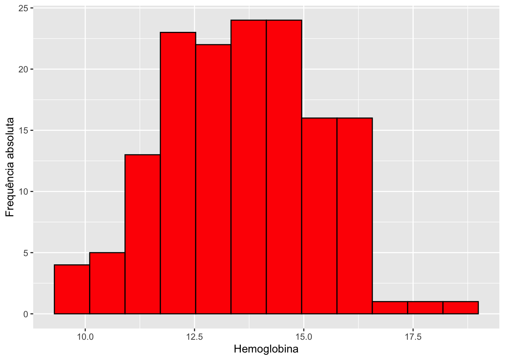
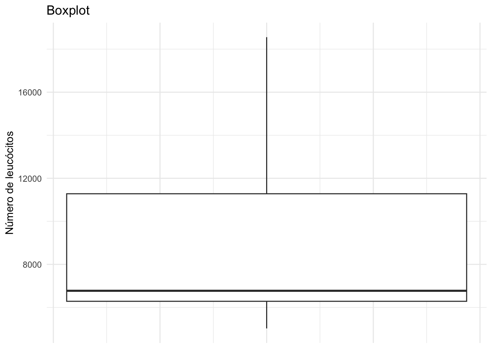
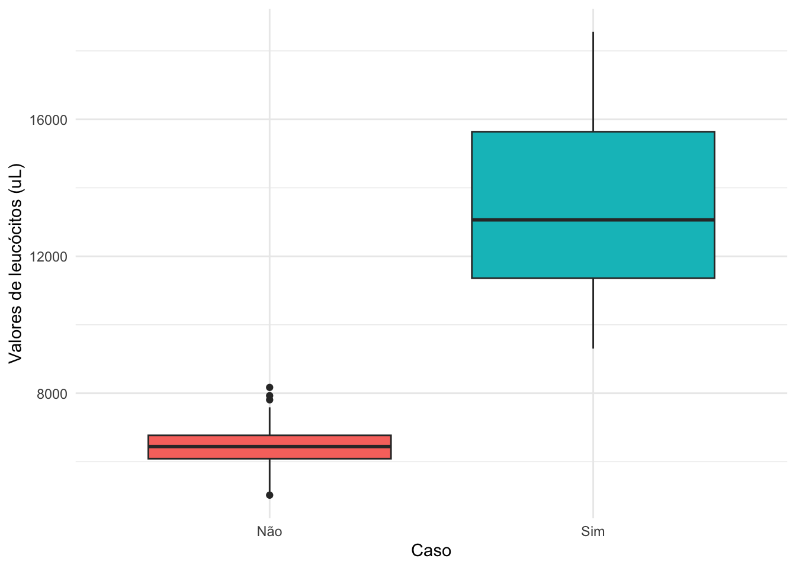
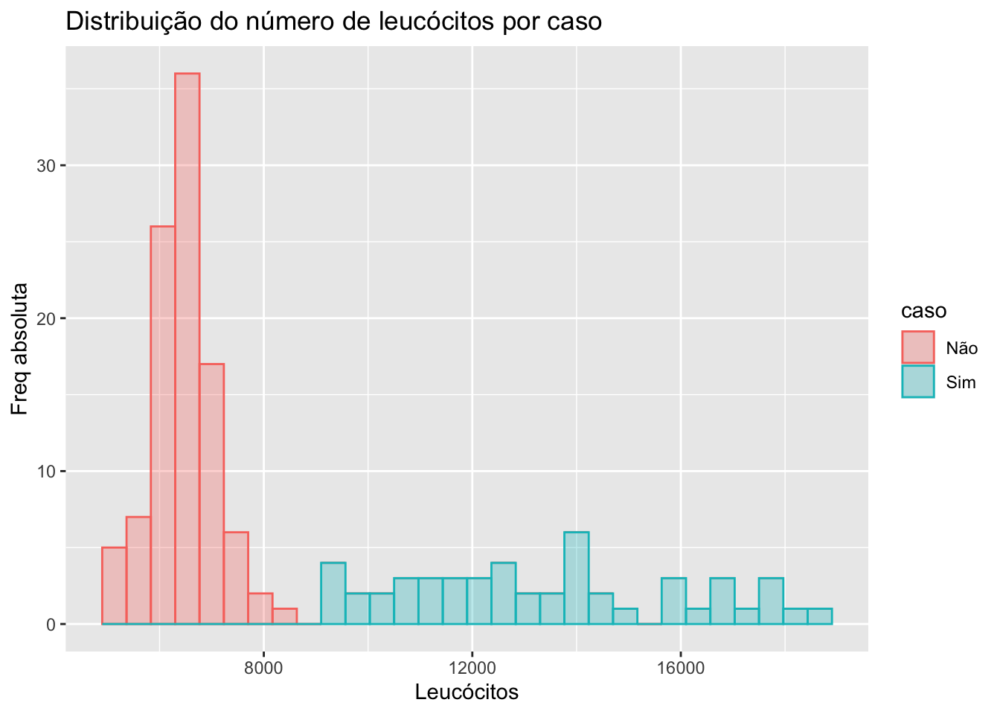
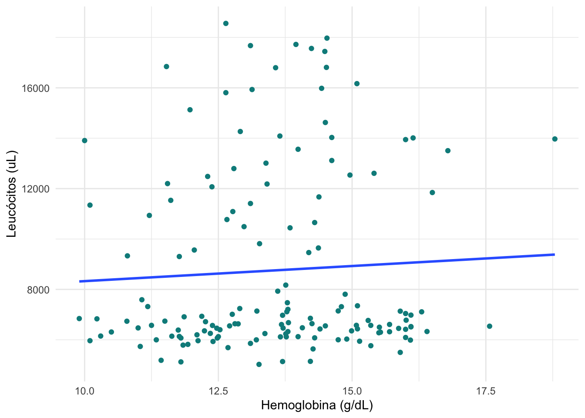
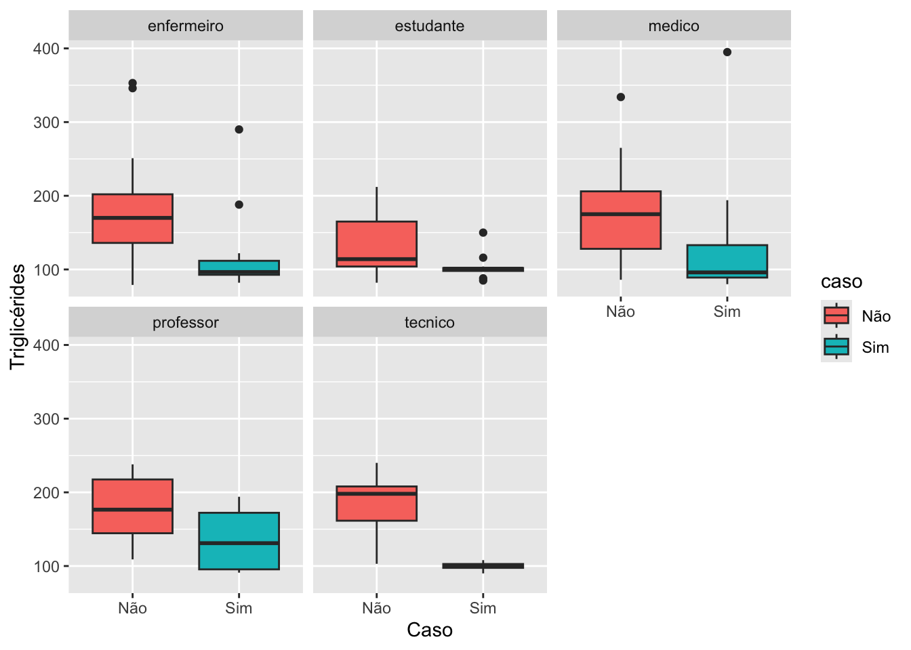
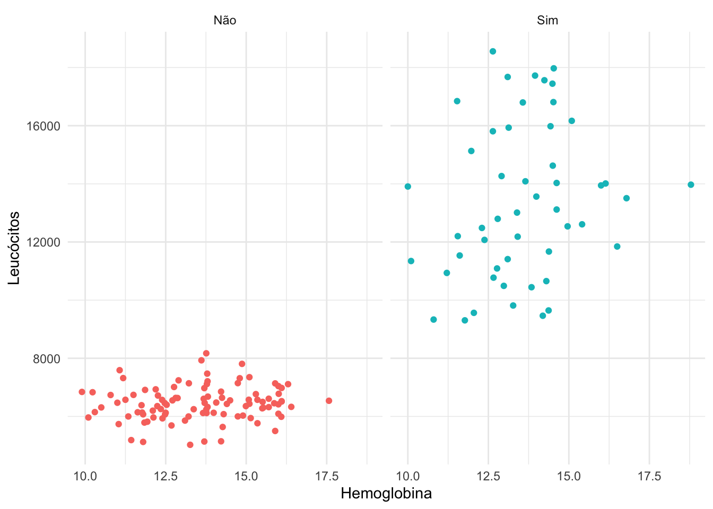
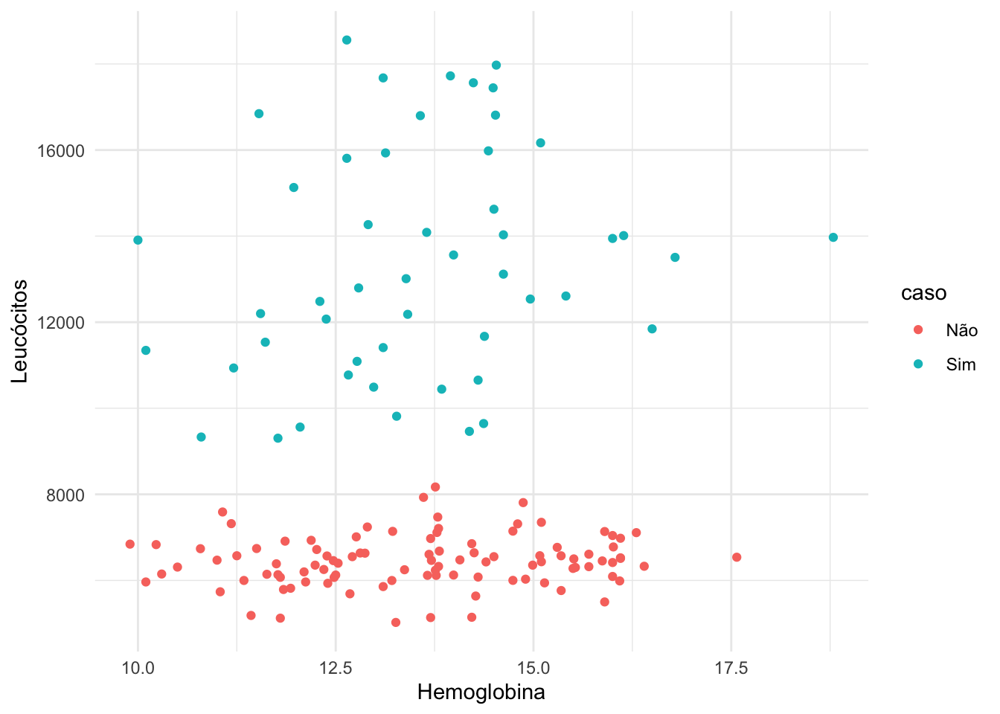

Warning: package 'knitr' was built under R version 4.3.3Warning: package 'gtsummary' was built under R version 4.3.3Quando se estuda uma variável, o maior interesse do pesquisador é conhecer o comportamento dessa variável, analisando a ocorrência de suas possíveis realizações.
No entanto, como resumir variáveis? Isso vai depender do tipo de variável!
Vimos que podemos resumir uma variável qualitativa através do cálculo da distribuição de frequências ou visualizar seu comportamento por meio de gráficos de barras.
Já uma variável quantitativa, pode ser resumida através do cálculo de medidas resumo como média, quartis e desvio padrão. Já o comportamento de uma única variável numérica pode ser visualizado por meio de gráficos como histograma e boxplot.
A seguir veremos como construir tabelas e gráficos usando os pacotes base, tidyverse e gtsummary para as variáveis do banco de dados surto.
Warning: package 'knitr' was built under R version 4.3.3Warning: package 'gtsummary' was built under R version 4.3.3surto <- read_excel("./data/surto.xlsx",
sheet = "Plan1")
surto <- mutate(surto,
caso = factor(caso, labels=c('Não','Sim')),
sexo = factor(sexo, labels=c("Feminino","Masculino")),
ocupa = factor(ocupa),
diarreia = factor(diarreia, labels=c('Não','Sim')),
colica = factor(colica, labels=c('Não','Sim')),
vomito = factor(vomito, labels=c('Não','Sim')),
nausea = factor(nausea, labels=c('Não','Sim')),
cefaleia = factor(cefaleia, labels=c('Não','Sim')),
desidratacao = factor(desidratacao,labels=c('Não','Sim')),
febre = factor(febre,labels=c('Não','Sim')),
servsaude = factor(servsaude, labels=c('Não','Sim')),
gravidade = factor(gravidade, order = TRUE, labels=c('Leve','Moderado',"Grave")),
salada = factor(salada, labels=c('Não','Sim')),
pao = factor(pao, labels=c('Não','Sim')),
medalhao = factor(medalhao, labels=c('Não','Sim')),
macarrao = factor(macarrao, labels=c('Não','Sim')),
molhoqueijo = factor(molhoqueijo, labels=c('Não','Sim')),
molhoverm = factor(molhoverm, labels=c('Não','Sim')),
pudim = factor(pudim, labels=c('Não','Sim')),
frutas = factor(frutas, labels=c('Não','Sim')),
agua = factor(agua, labels=c('Não','Sim')),
suco = factor(suco, labels=c('Não','Sim'))
)summary(surto) id caso sexo dtnasc
Min. : 1.00 Não:100 Feminino :73 Min. :1949-07-25 00:00:00
1st Qu.: 38.25 Sim: 50 Masculino:77 1st Qu.:1979-12-10 12:00:00
Median : 75.50 Median :1983-05-21 00:00:00
Mean : 75.50 Mean :1982-12-26 08:00:00
3rd Qu.:112.75 3rd Qu.:1988-08-18 18:00:00
Max. :150.00 Max. :1999-08-07 00:00:00
ocupa dtisint horaisint diarreia
enfermeiro:49 Min. :2018-11-20 00:00:00 Min. : 1.00 Não : 13
estudante :38 1st Qu.:2018-11-20 00:00:00 1st Qu.: 2.25 Sim : 37
medico :38 Median :2018-11-20 00:00:00 Median : 4.00 NA's:100
professor :10 Mean :2018-11-20 00:57:36 Mean : 4.44
tecnico :15 3rd Qu.:2018-11-20 00:00:00 3rd Qu.: 6.00
Max. :2018-11-21 00:00:00 Max. :12.00
NA's :100 NA's :100
colica vomito nausea cefaleia desidratacao febre servsaude
Não : 19 Não : 23 Não : 21 Não : 30 Não : 43 Não : 33 Não : 47
Sim : 31 Sim : 27 Sim : 29 Sim : 20 Sim : 7 Sim : 6 Sim : 3
NA's:100 NA's:100 NA's:100 NA's:100 NA's:100 NA's:111 NA's:100
gravidade salada pao medalhao macarrao molhoqueijo molhoverm
Leve : 36 Não:67 Não:96 Não: 36 Não:81 Não:74 Não:52
Moderado: 11 Sim:83 Sim:54 Sim:114 Sim:69 Sim:76 Sim:98
Grave : 3
NA's :100
pudim frutas agua suco hb leuco
Não:71 Não:61 Não:55 Não:56 Min. : 9.90 Min. : 698
Sim:79 Sim:89 Sim:95 Sim:94 1st Qu.:12.31 1st Qu.: 6260
Median :13.69 Median : 6754
Mean :13.57 Mean : 8714
3rd Qu.:14.79 3rd Qu.:11281
Max. :18.79 Max. :18557
tgl
Min. : 79.0
1st Qu.:100.0
Median :137.0
Mean :150.6
3rd Qu.:193.2
Max. :395.0
Observando as medidas resumo, notamos que pode haver algo de errado com a variável leuco (valor de leucócitos)! O valor mínimo da variável observado foi igual a 698. Para checar se esse valor está correto, precisamos revisar o prontuário desse indivíduo. Para tal, primeiramente precisamos descobrir qual o indivíduo que possui esse valor de leucócitos.
which.min(surto$leuco) #encontrando a posição do valor digitado errado para corrigí-lo[1] 123Usando a função which.min() encontramos que o indivíduo que possui o valor de leucócitos igual a 698 é o 123. Checando o prontuário do indivíduo 123, notamos que houve um erro na digitação do valor de leucócitos. Logo, precisamos corrigí-lo na base de dados.
surto$leuco[123] #conferindo se a posição corresponde mesmo ao valor errado[1] 698surto$leuco[123] <- 6980 #corrigindo valor no bancoUsando o pacote tidyverse:
# Retorna o índice (posição) da linha com o valor mínimo de leuco
surto %>%
slice(which.min(leuco)) # slice seleciona a linha correspondente ao índice retornado por which.min().
# Alterando o valor da linha 123 da coluna leuco
surto <- surto %>%
mutate(leuco = if_else(row_number() == 123, 6980, leuco))Para calcularmos a idade dos participantes devemos utilizar a data de nascimento.
No banco de dados, as variáveis dtnasc (data de nascimento) e dtisint (data de início dos sintomas) já estão no formato data; entretanto, caso fosse preciso formatá-las, poderíamos utilizar os comandos:
Para calcularmos a idade, precisamos escolher uma data de referência para então, fazermos a diferença entre a data de referência e a data de nascimento (usando o comando difftime()). A data referência escolhida foi 2018/11/20, primeiro dia do início dos sintomas.
tidyverse
Para tal, basta agruparmos (group_by) nossos dados por caso e então, calcularmos a média (mean) e o desvio padrão (sd) da idade usando a função summarise.
| caso | media | dp |
|---|---|---|
| Não | 34.36 | 6.87 |
| Sim | 39.02 | 11.53 |
Também podemos calcular outras medidas resumo como mediana, mínimo e máximo.
| caso | media | dp | min | max | mediana |
|---|---|---|---|---|---|
| Não | 34.36 | 6.87 | 21 | 56 | 35 |
| Sim | 39.02 | 11.53 | 19 | 69 | 37 |
tidyverse + gtsummary
tbl_summary do pacote gtsummary.
surto %>%
select(caso, hb, leuco, tgl, idade) %>%
gtsummary::tbl_summary(missing = "no")| Characteristic | N = 1501 |
|---|---|
| caso | |
| Não | 100 (67%) |
| Sim | 50 (33%) |
| hb | 13.69 (12.30, 14.80) |
| leuco | 6,773 (6,279, 11,345) |
| tgl | 137 (100, 194) |
| idade | 36 (30, 39) |
| 1 n (%); Median (Q1, Q3) | |
surto %>%
select(caso, hb, leuco, tgl, idade) %>%
gtsummary::tbl_summary(
by = caso,
label = list(
idade ~ "Idade",
hb ~ "Hemoglobina",
leuco ~ "Leucócitos",
tgl ~ "Triglicerídeos"),
statistic = everything() ~ "{mean} ({sd})",
digits = everything() ~ 1,
missing = "no"
) %>%
gtsummary::modify_header(label ~ "**Variável**")| Variável |
Não N = 1001 |
Sim N = 501 |
|---|---|---|
| Hemoglobina | 13.6 (1.8) | 13.6 (1.7) |
| Leucócitos | 6,447.9 (592.7) | 13,373.0 (2,654.4) |
| Triglicerídeos | 167.2 (56.2) | 117.5 (55.9) |
| Idade | 34.4 (6.9) | 39.0 (11.5) |
| 1 Mean (SD) | ||
Saiba mais em https://www.danieldsjoberg.com/gtsummary/articles/tbl_summary.html
ggplot2
Para cada tipo de variável há uma representação mais adequada de gráficos e tabelas. Nesse tutorial, focaremos na elaboração de gráficos que mostrem adequadamente o que se pretende visualizar. Afinal, uma tabela nem sempre resume os dados de forma eficiente, por isso os gráficos são importantes aliados.
Distribuição dos valores de hemoglobina dos participantes do evento.
surto %>%
ggplot( ) + # base de dados
geom_histogram(aes(hb), # histograma e varíavel a ser representada
fill="red", # adicionando cor
color = "black",
bins = 12) + # número de barras do histograma
labs(y="Frequência absoluta", #título eixo y
x="Hemoglobina" #título eixo x
) 
O boxplot é um diagrama poderoso, pois nos da a ideia de
Posição: quartis, mínimo e máximo;
Dispersão: distância interquantílica;
Assimetria: o quão simétricos ou não, os quartis estão posicionados;
Dados discrepantes: outliers.
Distribuição dos valores de leucócitos dos participantes do evento.
#Distribuição de leucócitos
surto %>%
ggplot(aes( y=leuco)) +
geom_boxplot() + # boxplot
ggtitle("Boxplot") +
ylab("Número de leucócitos") + # outra forma de nomear o eixo y
theme_minimal() +
theme(axis.title.x = element_blank(),
axis.text.x = element_blank())
Mais detalhes em http://www.sthda.com/english/wiki/ggplot2-legend-easy-steps-to-change-the-position-and-the-appearance-of-a-graph-legend-in-r-software.
Distribuição dos valores de leucócitos em participantes que adoeceram e que não adoeceram.
ggplot(surto) +
geom_boxplot(aes(x = caso, y= leuco, fill=caso)) +
labs(y="Valores de leucócitos (uL)",
x="Caso") +
guides(fill = "none") + # remove a legenda
theme_minimal()
O número de leucócitos se distribui de forma diferente entre doentes e não doentes. Observe a mediana e a dispersão é maior entre os doentes. E, os indivíduos doentes apresentam valores de leucócitos superiores aos não doentes.
Distribuição dos valores de leucócitos em participantes que adoeceram e que não adoeceram.
surto %>%
ggplot(aes(leuco, fill=caso, color=caso)) +
geom_histogram(alpha = 0.3 ) + #transparência
labs(
x = "Leucócitos",
y = "Freq absoluta",
title = "Distribuição do número de leucócitos por caso"
) `stat_bin()` using `bins = 30`. Pick better value with `binwidth`.
Visualização da relação entre os valores de hemoglobina (hb) e os valores de leucócitos (leuco).
ggplot(surto) + #dados
geom_point(aes(x=hb, y=leuco), #mapeamento
col="cyan4") + #cor azul diferente
geom_smooth(aes(x = hb, y = leuco), #reta de tendência aos pontos
se = F, #não plotar intervalo de confiança
method = "lm") + #modelo linear
labs(x="Hemoglobina (g/dL)",
y="Leucócitos (uL)") +
theme_minimal()
Podemos seguir a mesma lógica utilizada acima e escolher uma variável qualitativa para o recurso facet_wrap
Distribuição dos valores de triglicérides por sexo e ocupação.
ggplot(surto) +
geom_boxplot(aes(x=caso, y=tgl, fill=caso)) +
facet_wrap(~ocupa) +
labs(y="Triglicérides",
x="Caso") 
Visualização da relação dos valores de hemoglobina e dos valores de leucócitos por caso.
ggplot(surto) +
geom_point(aes(hb, leuco, col=caso)) +
facet_wrap(~caso) +
labs(x="Hemoglobina",
y="Leucócitos") +
guides(col = "none") + # remove a legenda de col
theme_minimal() 
#outra maneira
ggplot(surto) +
geom_point(aes(hb, leuco, color=caso)) +
labs(x="Hemoglobina",
y="Leucócitos") +
theme_minimal()
https://www.r-graph-gallery.com/48-grouped-barplot-with-ggplot2.html
https://rkabacoff.github.io/datavis/Bivariate.html https://ggplot2.tidyverse.org/reference/geom_bar.html
https://moderndive.com/index.html